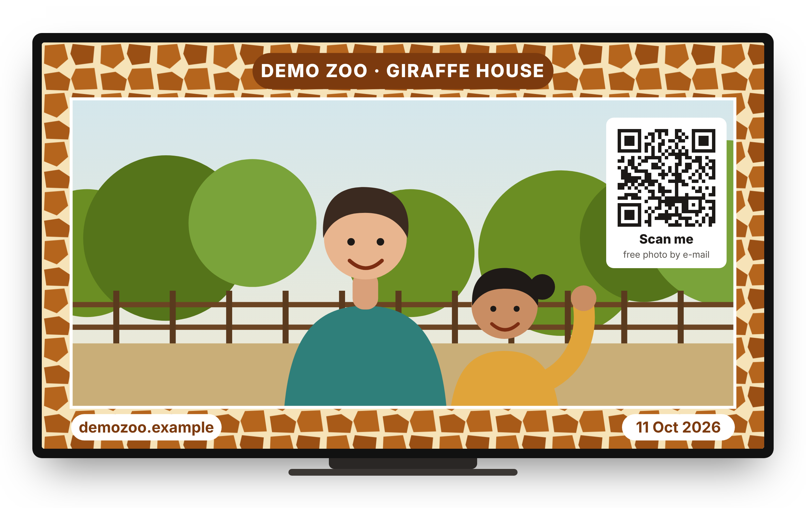
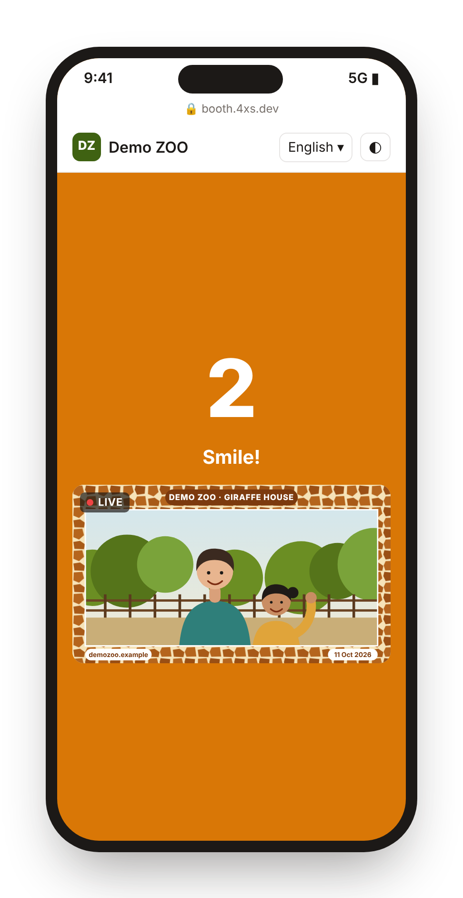
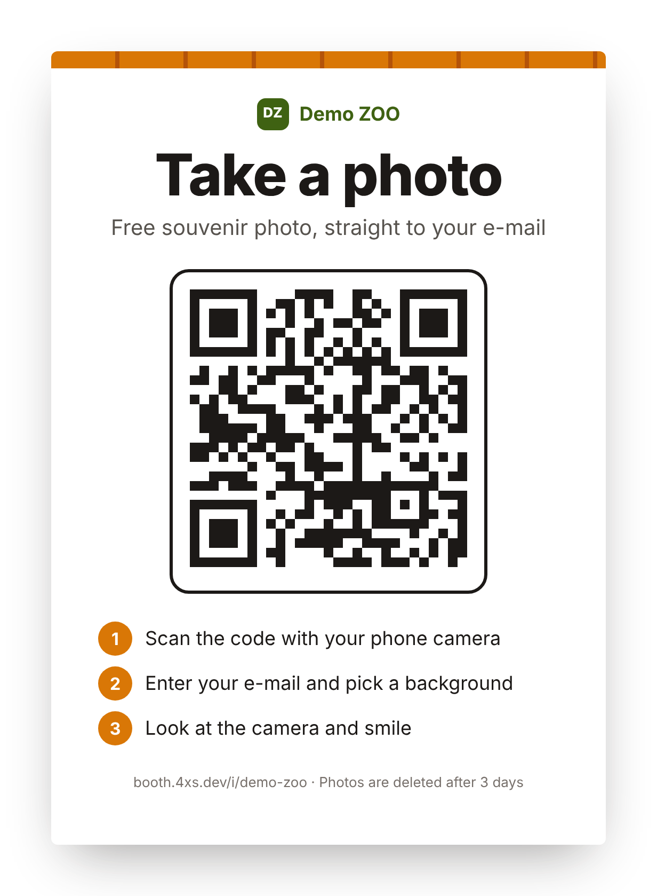
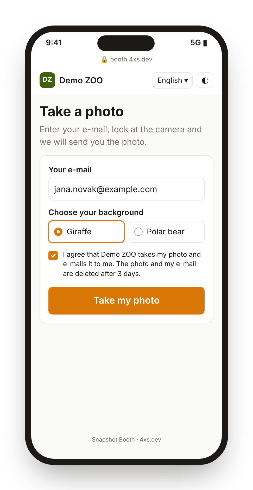
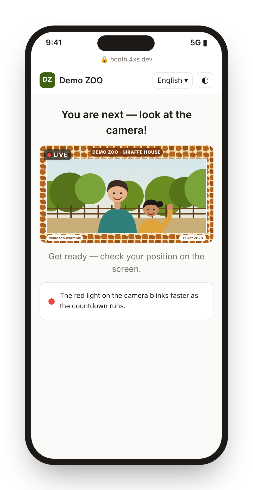
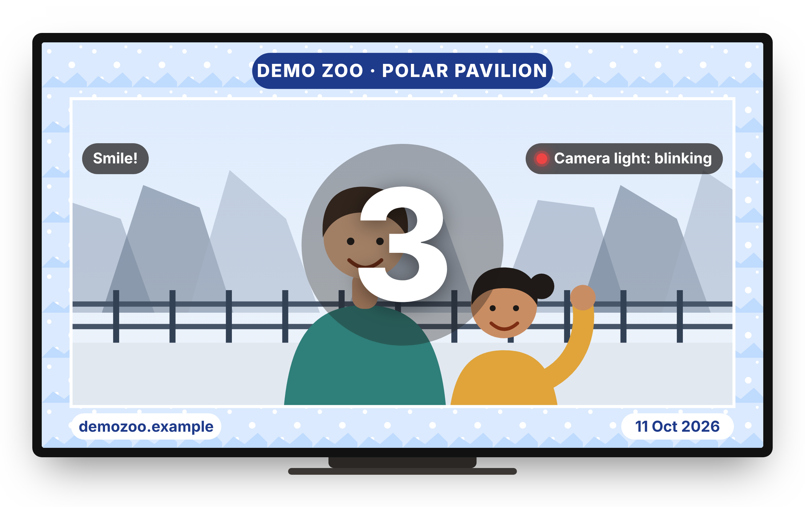
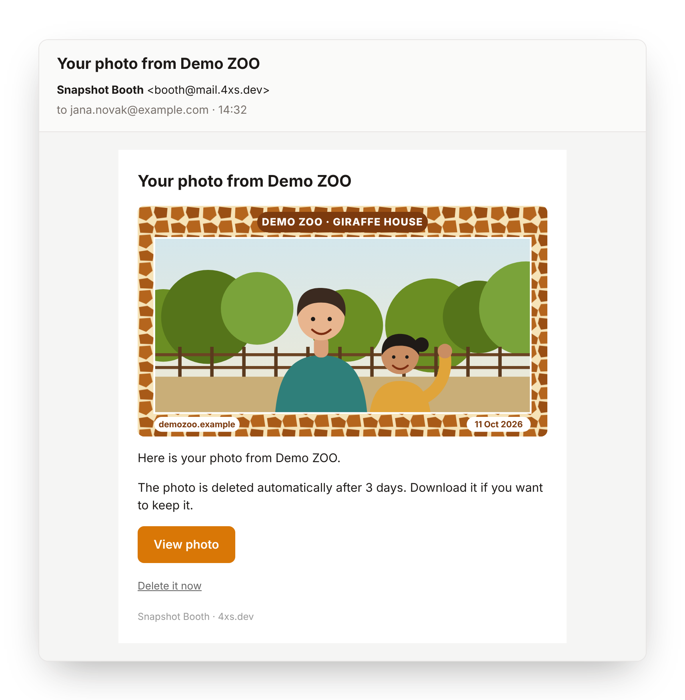
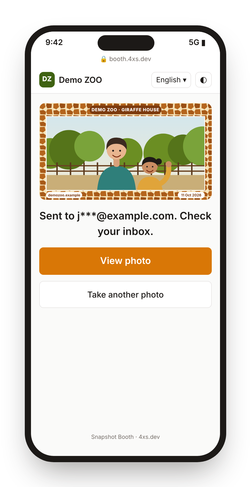
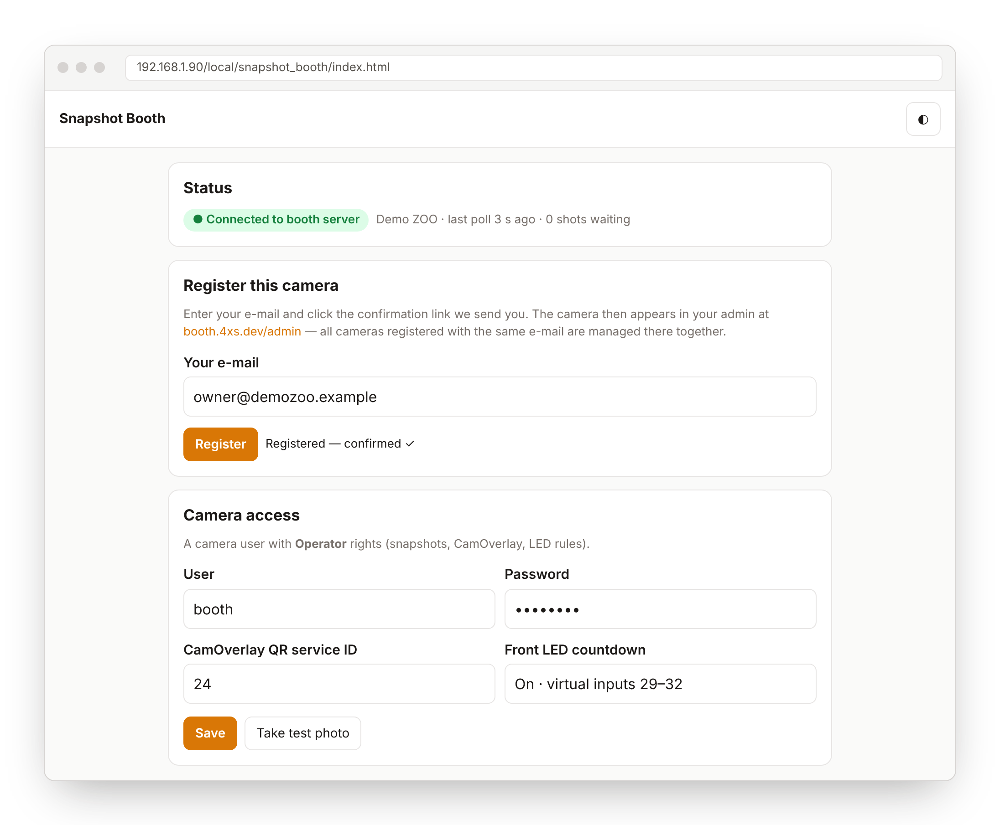
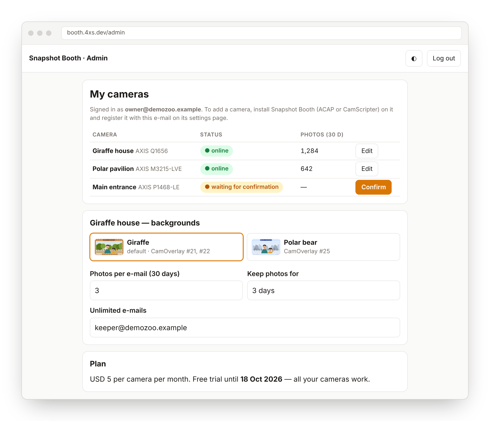

QR photo booth for AXIS cameras
Scan. Smile. Check your inbox.
Snapshot Booth turns an AXIS camera you already have into a photo booth. Visitors scan a printed QR code, type their e-mail, and the camera counts down and sends them the photo, with your branded frame on it.


The visitor's side
Five steps, one phone, zero downloads
This is everything a visitor sees, from the poster on the wall to the photo in their inbox.

Scan the printed QR
One poster next to the camera. The code is static and belongs to that camera, so you print it once and forget about it. A preview screen with a QR on the video is optional.
- Any phone camera opens
booth.4xs.dev/i/… - Rotating one-time QR available for the screen

Type an e-mail, pick a background
The page opens in the visitor's language. They enter an e-mail, choose one of your backgrounds and agree to a plain consent line that says when the photo will be deleted.
- Backgrounds are your CamOverlay graphics, shown by name
- Consent text and page copy editable per language

Get ready with a live preview
When it's their turn, the phone shows what the camera sees, about two frames a second, so people can step into the frame before the countdown starts. Anyone who scans during a shot waits in line and sees their place.
- Preview only for the visitor whose shot is active
- One shot at a time per camera, the rest queue

Count down on three things at once
The number runs on the phone, on the preview screen and on the camera itself: the front status LED blinks red faster and faster, then stays on while the photo is taken. Nobody has to look at their phone to know when to smile.


The photo lands in their inbox
The visitor gets an e-mail with the full-HD photo and your frame on it, plus a link to download or delete it. Photos are removed automatically after the retention period you set.
- Sent from
booth@mail.4xs.devin the visitor's language - "Delete it now" link in every e-mail
Under the hood
The camera does the work. The cloud just passes notes.
The camera sits behind your router and asks the booth server for work. No port forwarding, no video upload, no PC next to the camera.
Frame burned into the photo
The photo is taken from a running 1920×1080 MJPEG stream, where CamOverlay graphics are drawn. A one-shot snapshot would leave the frame out.
Works behind NAT
The camera long-polls the server, about 3,500 small requests a day per camera. The preview screen streams over the local network only.
Privacy by default
Photos and addresses are deleted after 3 days (you choose). Visitors can delete their photo at any time. The QR is hidden while a photo is taken.
The owner's side
Register with an e-mail. Manage every camera in one place.

On the camera
Install the app, type your e-mail, click the confirmation link. No tokens to copy. Add a camera user with Operator rights and you're connected.

In the admin
All cameras registered with your e-mail show up together. Name backgrounds, set the default, the photos-per-e-mail limit, retention days, texts and colours.
Where it fits
Anywhere people stop to remember the moment
Setup
Five steps to the first photo
- Install the app on the cameraAs an ACAP (
.eap) or as a CamScripter package. - Register with your e-mailClick the confirmation link. It also signs you in to the admin.
- Design the frame in CamOverlayAt 1920×1080. Each background can switch one or more overlays.
- Print the QR posterOptionally open the preview screen on a TV or tablet on the camera's network.
- Take a test photoThe settings page checks the LED and capture without sending anything.
Requirements: AXIS OS 12 (11.x should work), aarch64 camera (ARTPEC-8, ARTPEC-9, CV25), internet access from the camera. CamOverlay for the frame. Bench-tested on AXIS Q1656.
Pricing
$5 per camera / month
- 7-day free trial on your account, all cameras
- No per-photo fees
- Your own e-mail is never limited
- Pay with PayPal or Ko-fi, cancel anytime
FAQ
Questions owners ask
Do visitors need to install anything?
No. The QR opens a web page. Any recent phone browser works.
Will my frame and logo be in the photo?
Yes. The photo comes from the camera's own 1920×1080 stream, which includes your CamOverlay graphics. The QR code and countdown digits are kept out of it.
What stops someone from taking hundreds of photos?
Each e-mail address gets 3 photos per camera per rolling 30 days by default. You can change the number, reset it, and add unlimited addresses for staff.
What happens when two people scan at once?
The second visitor joins a queue and sees their position. Each gets their own photo.
Where are photos stored, and for how long?
On Cloudflare storage, for 3 days by default. You choose the retention per camera. Every e-mail has a link to delete the photo right away.
Does the camera need a public IP or open ports?
No. The camera connects out to the booth server, so it works behind any normal router or firewall that allows HTTPS.
Which cameras are supported?
AXIS cameras on aarch64 chips (ARTPEC-8, ARTPEC-9, CV25) with AXIS OS 12. Older ARTPEC-7 cameras are not supported by the ACAP build.